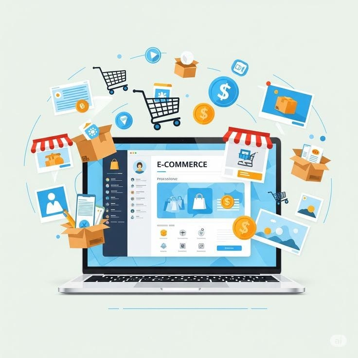

الاسم: مريم ماهر محمود محمود
شهد العالم في العقود الأخيرة ثورة تقنية هائلة غيرت مجرى الاقتصاد العالمي، وأصبحت التكنولوجيا الرقمية عصب الأعمال الحديثة. وتُعد التجارة الإلكترونية في طليعة هذه التحولات؛ إذ تجاوزت المفهوم التقليدي للشراء والبيع عبر المتاجر الأرضية إلى فضاء رقمي بلا حدود جغرافية، مما سهل تبادل السلع والخدمات والبيانات بسرعة وكفاءة عالية، وأعاد صياغة سلوك المستهلكين والعلاقات التجارية بين الشركات.
التعريف هي عملية بيع وشراء المنتجات، الخدمات، أو المعلومات عبر شبكات الإنترنت وشبكات الاتصال الرقمية الأخرى. وهي لا تقتصر فقط على المعاملات المالية، بل تشمل أيضاً الأنشطة الداعمة لها مثل التسويق الرقمي، دعم العملاء، وإدارة سلاسل الإمداد.
توسيع الأسواق: تمكين المشاريع الصغيرة والناشئة من الوصول إلى أسواق عالمية بتكلفة استثمارية منخفضة مقارنة بالمتاجر التقليدية. رفع كفاءة التشغيل: أتمتة العمليات الإدارية والمخزنية، مما يوفر الوقت والجهد ويقلل الهدر والأخطاء البشرية. تخصيص تجربة العميل: استخدام الذكاء الاصطناعي وتحليل البيانات لفهم سلوك المستهلكين وتقديم عروض مخصصة تلبي احتياجاتهم بدقة.

تتنوع أشكال التجارة الإلكترونية بناءً على الأطراف المتعاملة، وأبرزها:
| المزايا الايجابيه | التحديات والعيوب |
|---|---|
| العمل المستمر: إتاحة المتجر للعملاء على مدار الساعة طوال أيام الأسبوع | الأمن السيبراني والخصوصية: مخاوف المستخدمين المستمرة بشأن سرقة البيانات الشخصية وبطاقات الدفع الإلكتروني. |
| تخفيض التكاليف: إلغاء الحاجة لاستئجار مقار تجارية باهظة أو توظيف عدد كبير من طاقم العمل في المراحل الأولى. | غياب التجربة المادية: عدم قدرة العميل على لمس المنتج أو تجربته فعلياً قبل الشراء، مما قد يرفع نسب الاسترجاع. |
| المرونة والسرعة: إمكانية إتمام صفقات الشراء والدفع بضغطة زر واحدة ومن أي مكان في العالم. | التحديات اللوجستية: تأخر الشحن في بعض المناطق، أو ارتفاع تكاليف التوصيل وإدارة المرتجعات. |
| المنافسة الشرسة: سهولة دخول أسواق جديدة أدت إلى حدوث منافسة قوية بين المتاجر تتطلب استراتيجيات تسويقية مبتكرة. |
لكي يحقق أي مشروع تجارة إلكترونية نجاحاً مستداماً، يجب الارتكاز على دعائم رئيسية تشمل:
أما عن المستقبل، فتشير التوقعات إلى نمو متسارع بفضل دمج تقنيات الذكاء الاصطناعي (AI) لتحسين تجارب التسوق، وانتشار تقنيات الواقع المعزز (AR) لمعاينة المنتجات افتراضياً، فضلاً عن الاعتماد المتزايد على التسوق من خلال الهواتف المحمولة (M-Commerce).
تُعد التجارة الإلكترونية قطاعاً ديناميكياً ومتسارع النمو لم يعد مجرد خيار تكميلي للشركات، بل أصبح ضرورة حتمية للمنافسة في السوق المعاصر. ورغم وجود تحديات أمنية ولوجستية، فإن الابتكار التكنولوجي المستمر يساهم في تذليل هذه العقبات، مما يجعل آفاق التجارة الإلكترونية واعدة ومحورية في تشكيل مستقبل الاقتصاد العالمي.